TEMA: Inteligência Artificial
SUBTEMA: OdisseIA
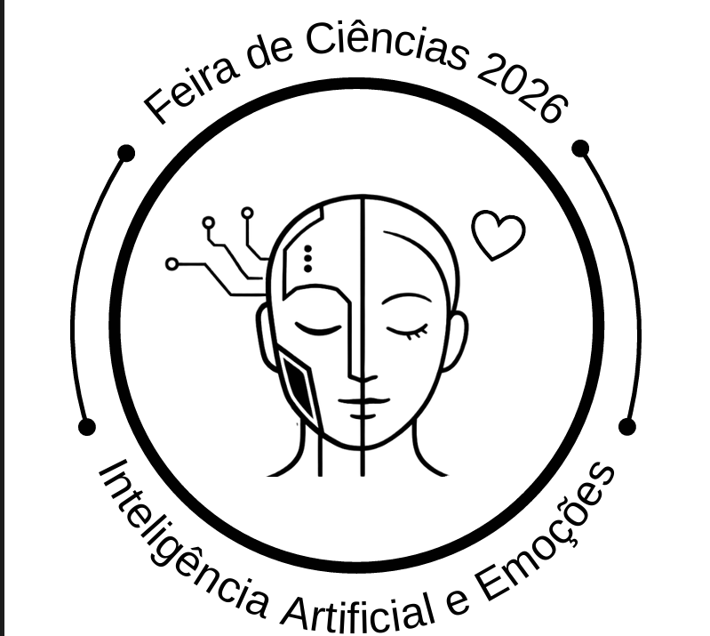
SANTO ANDRÉ
2026
PROFESSORES ORIENTADORES:
Eliane Denis Rissardi
Henrique Nascimento Santana
1° EMI1NAC
Nome dos alunos:
Bento Durso
Carlos Eduardo
Eduarda Cristina
Gabriel Carvalho
Gabriel Joaquim
Heitor da Rocha
Heitor Faria
Heloisa Bento
Julia Souza
Juliane Sommerhauzer
Lara Sisti
Leonardo Brito
Livia Wada
Lorrany Carvalho
Miguel Neris
Nicolas Carvalho
Pedro Henrique
Pietro Ramos, Pyetro Santos
Rafael Lima
Rafaela Aranha
Rebeca Maia
Ronald Bernardo
Sofia Xavier
Santo André
2026
Introdução
Este portfólio apresenta o projeto OdisseIA, desenvolvido para a Feira de Ciências com o objetivo de explorar a evolução dos jogos eletrônicos e da inteligência artificial, desde os primeiros experimentos computacionais até as tecnologias presentes nos jogos atuais. O trabalho reúne pesquisas, conteúdos históricos e experiências interativas que demonstram como a tecnologia transformou a maneira de jogar e de desenvolver videogames ao longo das décadas.
Ao longo do projeto, são abordados os principais marcos da história dos jogos eletrônicos, destacando consoles, jogos clássicos e avanços tecnológicos que contribuíram para o crescimento dessa indústria. Também é explorada a evolução da inteligência artificial nos games, apresentando técnicas utilizadas para controlar personagens, desenvolver estratégias, encontrar caminhos e criar experiências mais dinâmicas e interativas, criando uma apresentação que pode remeter a ideia de uma “odisseia moderna” com a foco em inteligência artificial
Além da parte teórica, o projeto conta com o desenvolvimento de uma plataforma digital chamada OdisseIA, criada com HTML, CSS e JavaScript. O site complementa as apresentações presenciais por meio de estações temáticas, acesso aos conteúdos através de QR Codes e acompanhamento do progresso dos visitantes, proporcionando uma experiência de aprendizagem acessível e interativa. Outro destaque é o X-BOT, um jogo de cartas estratégico desenvolvido pela turma, inspirado em jogos como Pokémon e Yu-Gi-Oh!, com temática de máquinas e robôs. O jogo utiliza diferentes tipos de cartas, habilidades, pontos de vida, ataque, defesa e energia, incentivando o raciocínio estratégico e a tomada de decisões durante as partidas.
Dessa forma, este portfólio reúne o trabalho desenvolvido pelos grupos, integrando pesquisa histórica, programação, inteligência artificial e criação de jogos. A proposta do OdisseIA é demonstrar que os videogames vão além do entretenimento, sendo também ferramentas de aprendizagem, criatividade e inovação, capazes de conectar o conhecimento científico às experiências práticas e às possibilidades tecnológicas do futuro.
Desenvolvimento
O nome OdissélA combina as palavras "Odisseia", que representa uma jornada de exploração e descobertas, e "IA", que simboliza a Inteligência Artificial. O nome reflete a proposta do projeto de unir tecnologia, criatividade e interatividade em uma experiência dinâmica. Além disso, representa a conexão entre o site, a inteligência artificial e o jogo
X-BOT, proporcionando aos visitantes uma jornada educativa e interativa. O nosso projeto nasceu como uma experiência integrada para a feira de ciências, unindo apresentações presenciais a uma plataforma digital interativa que guia os visitantes pela evolução dos jogos eletrônicos e da inteligência artificial que teve um papel importante no desenvolvimento, auxiliando na criação, revisão e melhoria dos games. Desenvolvido com HTML que é responsável por organizar o conteúdo , CSS que define a aparência e as animações e JavaScript que permite o funcionamento dos recursos, como o processo das estações e a validação dos QR Codes,e pensando especialmente para uma navegação simples e acessível pelo celular, o site atua como um fio condutor que conecta o espaço físico da feira ao ambiente virtual. Ao iniciar sua visita, o participante conhece a proposta do projeto e acessa um Hub central, onde visualiza um menu com quatro estações temáticas e o acompanhamento do seu progresso. Além disso, utilizamos recursos como o ChatGPT que nos ajudou a organizar as ideias, o Claude que contribuiu com melhorias e o Claude Code que implementou parte das soluções. Todas as etapas foram analisadas e testadas pela equipe, seguindo o documento Al Workflow, disponível no GitHub.
A dinâmica funciona de maneira gamificada: após assistir a cada apresentação física na feira, o visitante escaneia um QR Code para desbloquear o conteúdo correspondente no site, tendo suas etapas salvas diretamente no navegador, sem a necessidade de criar uma conta. Essa jornada começa pelas raízes históricas da computação, avança pelo desenvolvimento das técnicas de inteligência artificial e culmina, ao final do percurso, na liberação do acesso ao X-B0T, um jogo autoral desenvolvido em conjunto para colocar em prática todos os conceitos apresentados.
A primeira parte dessa jornada transporta o visitante para a década de 1950, época em que os computadores eram máquinas gigantescas, caras e restritas a pesquisas científicas e militares, mas que já serviam de palco para os primeiros experimentos lúdicos. Em agosto de 1950, na Canadian National Exhibition, em Toronto, o inventor canadense Josef Kates apresentou o Bertie the Brain, uma estrutura de quatro metros de altura baseada em válvulas eletrônicas que jogava jogo da velha contra humanos através de botões e um painel luminoso, contando inclusive com níveis de dificuldade ajustáveis. No ano seguinte, em maio de 1951, a empresa britânica Ferranti exibiu no Festival of Britain, em Londres, o computador Nimrod, uma máquina de grandes proporções capaz de jogar Nim, "que rata-se de um jogo combinatório e imparcial para dois jogadores, onde o objetivo principal é retirar objetos como palitos, pedras ou moedas divididos em pilhas." demonstrando que sistemas eletrônicos podiam processar estratégias e tomar decisões.
Em 1952, na Universidade de Cambridge, Alexander S. Douglas deu um passo além em sua tese de doutorado sobre interação humano-computador ao programar o OXO no computador EDSAC, que consistia o humano jogar com o computador o famoso jogo da velha, exibindo diretamente em uma tela de tubo de raios catódicos (CRT) controlada por um telefone adaptado. Entre 1954 e 1955, pesquisadores passaram a explorar algoritmos matemáticos para o xadrez, destacando-se o método Turochamp, de Alan Turing que foi responsável pela criação do primeiro computador que processava dados, que precisava ter seus cálculos executados manualmente devido às limitações de hardware da época. Pouco tempo depois, em 1958, o físico americano William Higinbotham criou o Tennis for Two que era um simulador de tênis onde dois jogadores competem rebatendo uma bola virtual sobre uma rede de uma perspectiva lateral utilizando uma tela de um osciloscópio. No Laboratório Nacional de Brookhaven, utilizando um computador analógico que processa dados por meio de grandezas físicas contínuas como voltagem por exemplo, enquanto em 1959 o experimento Mouse in the Maze introduziu o controle de um rato virtual por labirintos em tempo real.
Avançando pelas estações históricas da OdisseIA, o visitante compreende como a década de 1960 transformou esses experimentos científicos em experiências interativas. O grande marco ocorreu em 1961, quando Steve Russell e outros estudantes do MIT desenvolveram o Spacewar! para o computador PDP-1, colocando dois jogadores em um combate espacial onde naves disparavam torpedos e sofriam a influência gravitacional de uma estrela no centro da tela. Em 1962, o código aberto do jogo espalhou-se por diversas universidades americanas, inspirando uma nova geração de programadores.
Paralelamente, entre 1966 e 1969, os trabalhos de Ralph Baer com o protótipo Brown Box e jogos de tênis para televisão lançaram as bases dos consoles domésticos. Esse amadurecimento levou à explosão comercial da década de 1970, iniciada em 1971 com o Computer Space, o primeiro arcade comercial criado por Nolan Bushnell e Ted Dabney em parceria com a Nutting Associates. Em 1972, a dupla fundou a Atari e lançou o Pong, um simulador de tênis de mesa cuja simplicidade fez tanto sucesso nos testes no bar Andy Capp's Tavern, na Califórnia, que a máquina travou pelo excesso de moedas.
Nos anos seguintes, os fliperamas diversificaram seus gêneros com Tank (1974), da Atari, que trazia batalhas de tanques em cenários com obstáculos, e Gunfight, da Midway, um duelo de cowboys que revolucionou a indústria ao substituir circuitos dedicados por um microprocessador. Em 1976, a Atari lançou Breakout, projetado por Bushnell e Steve Bristow com protótipo construído por Steve Jobs e Steve Wozniak, adaptando a mecânica de rebater bolas para o desafio individual de destruir blocos. Em 1977, o lançamento do Atari 2600 (originalmente Atari VCS) levou os jogos definitivamente para a sala de estar através do sistema de cartuchos trocáveis e joysticks, popularizando títulos como Adventure e Pitfall!
O final da década consolidou a era de ouro dos arcades com dois fenômenos: Space Invaders (1978), criado por Tomohiro Nishikado na Taito, que introduziu fileiras de alienígenas, barreiras de proteção e uma trilha sonora que acelerava conforme o perigo aumentava; e Asteroids (1979), de Ed Logg e Lyle Rains na Atari, que inovou com movimentação inercial, teletransporte, tela contínua nas bordas e rochas espaciais que se dividiam ao serem atingidas.
A transição para as décadas de 1980, 1990 e 2000 mostra ao visitante do projeto como os jogos se tornaram um fenômeno cultural e tecnológico global. Nos anos 1980, ao lado dos primeiros jogos de aventura em texto (text adventures) e do console Intellivision, surgiram ícones eternos como Pac-Man (1980), Tetris (1984) e Super Mario Bros. (1985). Embora o mercado tenha sofrido o Grande Crash de 1983 devido à saturação de jogos de baixa qualidade, como E.T. da Atari, a indústria foi resgatada pelo lançamento do Nintendo Entertainment System (NES, ou Famicom no Japão), que estabeleceu rigorosos padrões de qualidade e narrativas mais ricas. Na década de 1990, a famosa guerra dos consoles de 16 bits entre o Mega Drive da Sega, estrelado por Sonic, e o Super Nintendo, de Mario — que já ensaiava efeitos de rotação e escala com o Mode 7 —, abriu caminho para a revolução dos gráficos tridimensionais na quinta geração, liderada pelo Sega Saturn e pelo PlayStation da Sony em 1994, e pelo Nintendo 64 em 1996.
A adoção do CD-ROM que é um tipo de mídia de armazenamento óptico e dos cartões de memória permitiu trilhas sonoras complexas, cenas cinematográficas e o florescimento dos RPGs e dos jogos de estratégia em tempo real, como Warcraft, Command & Conquer e Age of Empires, enquanto franquias portáteis como Pokémon tornaram-se marcas culturais globais e as primeiras lan houses surgiam como espaços de socialização em rede. Já a chegada dos anos 2000 consolidou a era online e das lan houses, popularizando jogos de computador como The Sims, American McGee's Alice, Alfred's Adventure e Habbo Hotel, ao mesmo tempo em que o Dreamcast da Sega inaugurou os modems embutidos nos consoles e abria espaço para a geração do PlayStation 2, Xbox, GameCube e portáteis como WonderSwan Color e Neo Geo Pocket Color.
À medida que o visitante avança pelas estações do site OdisseIA e escaneia novos QR Codes, ele descobre que essa evolução visual e de hardware sempre caminhou lado a lado com o desenvolvimento da Inteligência Artificial nos jogos. Nos primeiros títulos, como Pong, o computador apenas seguia cálculos matemáticos simples para acompanhar a bola, evoluindo logo para a chamada IA baseada em regras, onde o programador estabelece condições fixas: se o jogador está distante, o inimigo patrulha; se o detecta, persegue; se está próximo, ataca; e se está com pouca vida, foge. Em 1980, Pac-Man demonstrou o poder da IA de perseguição ao dar comportamentos distintos para cada um de seus quatro fantasmas. Para organizar essas ações, a indústria adotou as Máquinas de Estados Finitos (Finite State Machines - FSMs), que dividem o comportamento do personagem em estados bem definidos de patrulha, detecção, perseguição, ataque e procura, combinadas a algoritmos de navegação e Pathfinding, como o famoso A* (A-Star), que calcula a melhor rota em um mapa desviando de paredes e obstáculos.
Com o aumento da complexidade dos jogos modernos, especialmente em RPGs de mundo aberto, surgiram arquiteturas mais sofisticadas apresentadas nas estações da feira, como as Behavior Trees (Árvores de Comportamento), que avaliam decisões de forma hierárquica para definir um comportamento de personagens não jogáveis(NPC), e a Utility AI, que e um sistema que atribui pontuações matemáticas para cada ação possível — por exemplo, conferindo 95 pontos para curar-se quando a vida está baixa, contra 80 para atacar ou 70 para buscar cobertura —, garantindo reações muito mais orgânicas para inimigos, aliados e NPCs como guardas e comerciantes. Já no universo dos jogos de cartas colecionáveis (TCGs), a inteligência artificial atua na análise combinatória por meio de algoritmos como Minimax e Monte Carlo Tree Search (MCTS), capazes de simular jogadas futuras, decidir o momento exato de atacar ou ativar um efeito e até testar milhares de partidas automatizadas para auxiliar os desenvolvedores no balanceamento das cartas. Mais recentemente, essa base tradicional ganhou o reforço do Machine Learning (Aprendizado de Máquina), que aprende padrões diretamente a partir de dados e experiências — como demonstrado pelo sistema AlphaGo, da DeepMind —, e da IA Generativa, que foi capaz de criar diálogos, missões, histórias, vozes e cenários dinamicamente. Longe de se anularem, a IA tradicional e a generativa se complementam: enquanto a primeira garante controle, previsibilidade e equilíbrio nas regras de combate e movimentação, a segunda amplia a criatividade e a imersão dos mundos virtuais.
Ao concluir a leitura e o desbloqueio de todas as estações teóricas no Hub do OdisseIA, o visitante finalmente libera no próprio navegador a etapa final da jornada: o acesso ao X-Bot, um jogo de cartas colecionáveis com temática de máquinas e robôs que materializa na prática tudo o que foi visto ao longo da feira. No X-Bot, a criatividade e a identidade visual se unem à matemática para dar vida a um universo próprio, onde cada carta possui uma função narrativa e tática. O jogador pode escolher líderes como Rogen, um sábio estrategista da classe Mágico cuja habilidade permite analisar as cartas do topo do baralho para antecipar jogadas, ou Bobo, da classe Especialista, focado em colocar robôs em campo rapidamente ao jogar unidades de baixo custo gratuitamente e baratear cartas pesadas. O campo de batalha é modificado por cartas de terreno, como A Grande Biblioteca, que fortalece os Mágicos, e a Oficina, que amplia a resistência dos Especialistas, além de itens como o Tomo da Sabedoria, capaz de converter uma unidade para a classe Mágica. A dinâmica das partidas se completa com cartas comuns de suporte e geração de energia, cartas de efeito e personagens especiais com habilidades únicas, como Rodote, que prevê cartas do oponente, Mabo, que protege o líder contra efeitos adversários, H4KB0T, que manipula atributos de poder e defesa em campo, além de Drogoon e Bomia, que diversificam as estratégias.
Para transformar o universo do X-Bot em um jogo funcional integrado à conclusão da feira, a equipe utilizou a linguagem Python devido à sua flexibilidade e clareza lógica. A programação estruturou cada carta com seus respectivos atributos de nome, tipo, poder, defesa, custo de energia e habilidades especiais, gerenciando automaticamente o embaralhamento, a compra inicial e o fluxo de cartas entre o baralho, a mão, o campo e o descarte. O motor do jogo controla rigorosamente o sistema de energia a cada turno e automatiza o sistema de combate, validando ataques, comparando atributos de poder e defesa e organizando a fila de resolução dos efeitos para que habilidades encadeadas ocorram sem erros e mantenham o equilíbrio competitivo, impedindo que uma única carta vença a partida sozinha. É exatamente sobre essa base lógica que a Inteligência Artificial do X-Bot opera: além de automatizar mecânicas de análise como a habilidade do líder Rogen, a estrutura permite o funcionamento de um oponente controlado pelo computador que utiliza critérios de avaliação e sistemas de pontuação semelhantes à Utility AI para analisar sua mão, administrar energia, posicionar robôs e escolher os melhores alvos de ataque.
Conclusão
Culminando na criação de toda a experiência, a elaboração do portfólio foi importante para compreender a evolução dos videogames e da tecnologia, principalmente a atuação da inteligência artificial nos jogos, demonstrando a capacidade criativa e a imaginação do ser humano ao longo da história. Por meio das pesquisas, aprendemos como a inteligência artificial, a programação e o desenvolvimento de jogos contribuíram para transformar a maneira como as pessoas interagem com a tecnologia.
O projeto também estimulou a criatividade e o raciocínio lógico, habilidades essenciais para a criação e o desenvolvimento de um jogo, exigindo organização e trabalho em equipe. Desse modo, a Feira de Ciências nos proporcionou uma experiência enriquecedora, permitindo-nos aprimorar nossa inventividade , bem como a capacidade de trabalhar em equipe e os conhecimentos sobre a evolução das tecnologias.
Dessa forma, o projeto OdisselA cumpre seu propósito de conectar história, ciência da computação, desenvolvimento web e criação de jogos em uma experiência única e coesa. A integração entre as apresentações presenciais, o desbloqueio progressivo por QR Code no site mobile e a culminância prática no jogo X-Bot permitiu que os visitantes não apenas ouvissem falar sobre a evolução da tecnologia, mas vivenciassem na prática como os videogames deixaram de ser simples experimentos de laboratório nos anos 1950 para se tornarem um dos campos mais ricos de inovação para a educação, o trabalho em equipe e o futuro da inteligência artificial.
REFERÊNCIAS BIBLIOGRAFICAS
21ST.DEV. 21st.dev: fonte de referências e elementos visuais para o design do site. [S. l.], [202-]. Disponível em: https://21st.dev/. Acesso em: out. 2026.
AAAI / AIIDE. PANGeA: Procedural Artificial Narrative Using Generative AI for Turn-Based, Role-Playing Video Games. In: AAAI CONFERENCE ON ARTIFICIAL INTELLIGENCE AND INTERACTIVE DIGITAL ENTERTAINMENT (AIIDE), [S. l.], 2024. Disponível em: https://ojs.aaai.org/index.php/AIIDE/article/view/31876. Acesso em: out. 2026.
AI-POWERED dialogues and quests generation in role-playing games using Google's Gemini and Sentence BERT framework. Procedia Computer Science, [S. l.], 2024. Disponível em: https://www.sciencedirect.com/science/article/pii/S187705092403148X. Acesso em: out. 2026.
CANALTECH. Portal Canaltech: tecnologia, ciência e games. [S. l.], [202-]. Disponível em: https://canaltech.com.br/. Acesso em: out. 2026.
EPIC GAMES. Behavior Trees in Unreal Engine. [S. l.]: Epic Games Documentation, [202-]. Disponível em: https://dev.epicgames.com/documentation/en-us/unreal-engine/behavior-trees-in-unreal-engine. Acesso em: out. 2026.
EPIC GAMES. Environment Query System in Unreal Engine. [S. l.]: Epic Games Documentation, [202-]. Disponível em: https://dev.epicgames.com/documentation/en-us/unreal-engine/environment-query-system-in-unreal-engine. Acesso em: out. 2026.
EQUIPE DO JOGO X-BOT. Documentação interna, regras e identidade visual do jogo X-Bot. Material técnico desenvolvido para o Projeto OdisseIA. 2026.
EXPLICADO.NET. Portal Explicado.net. [S. l.], [202-]. Disponível em: https://explicado.net/. Acesso em: out. 2026.
GAME AI PRO. An Introduction to Utility Theory. Cap. 9. [S. l.], [201-]. Disponível em: https://www.gameaipro.com/GameAIPro/GameAIPro_Chapter09_An_Introduction_to_Utility_Theory.pdf. Acesso em: out. 2026.
GARCÍA-SÁNCHEZ, Pablo et al. Optimizing Hearthstone Agents using an Evolutionary Algorithm. arXiv preprint arXiv:2410.19681, 2024. Disponível em: https://arxiv.org/abs/2410.19681. Acesso em: out. 2026.
GITHUB PAGES. GitHub Pages: plataforma de hospedagem e publicação web. [S. l.], [202-]. Disponível em: https://pages.github.com/. Acesso em: out. 2026.
GOOGLE DEEPMIND. AlphaGo. [S. l.]: Google DeepMind Research, [202-]. Disponível em: https://deepmind.google/research/alphago/. Acesso em: out. 2026.
GOOGLE RESEARCH. AlphaGo: Mastering the ancient game of Go with Machine Learning. [S. l.]: Google Research Blog, 2016. Disponível em: https://research.google/blog/alphago-mastering-the-ancient-game-of-go-with-machine-learning/. Acesso em: out. 2026.
KWON, Minji; SEO, Jinseok. Game AI Agents using Deliberative Behavior Tree based on Utility Theory. Korea Citation Index (KCI), [S. l.], 2022. Disponível em: https://www.kci.go.kr/kciportal/ci/sereArticleSearch/ciSereArtiView.kci?sereArticleSearchBean.artiId=ART002817338. Acesso em: out. 2026.
MEDIUM. Artigos sobre história dos jogos eletrônicos e tecnologia. [S. l.], [202-]. Disponível em: https://medium.com/. Acesso em: out. 2026.
NARRATIVE and dialogue generation for video-games: A systematic mapping. Engineering Applications of Artificial Intelligence, [S. l.], 2026. Disponível em: https://www.sciencedirect.com/science/article/pii/S0952197626013242. Acesso em: out. 2026.
NOSTALGIA GAMES. Nostalgia Games: história dos videogames clássicos. [S. l.], [202-]. Disponível em: https://nostalgiagames.com.br/. Acesso em: out. 2026.
PERSONALIZED Quest and Dialogue Generation in Role-Playing Games. In: CHI CONFERENCE ON HUMAN FACTORS IN COMPUTING SYSTEMS (CHI '23), 2023. Proceedings [...]. [S. l.]: ACM, 2023. Disponível em: https://doi.org/10.1145/3544548.3581441. Acesso em: out. 2026.
RAMOS, Pietro et al. OdisseIA: repositório com o código-fonte do site do projeto. GitHub, 2026. Disponível em: https://github.com/pietroramosz/OdisseIA. Acesso em: out. 2026.
SÃO PAULO ANTIGA. São Paulo Antiga: história e cultura. São Paulo, [202-]. Disponível em: https://www.saopauloantiga.com.br/. Acesso em: out. 2026.
SONY GROUP PORTAL. Corporate History & PlayStation Heritage. Tóquio, [202-]. Disponível em: https://www.sony.com/en/. Acesso em: out. 2026.
ŚWIECHOWSKI, Maciej; TAJMAJER, Tomasz; JANUSZ, Andrzej. Improving Hearthstone AI by Combining MCTS and Supervised Learning Algorithms. arXiv preprint arXiv:1808.04794, 2018. Disponível em: https://arxiv.org/abs/1808.04794. Acesso em: out. 2026.
TECGADGETS; TECNOHUB. Portais de tecnologia e história dos jogos eletrônicos. [S. l.], [202-]. Acesso em: out. 2026.
TECHTUDO. Portal TechTudo: jogos e tecnologia. Rio de Janeiro: Grupo Globo, [202-]. Disponível em: https://www.techtudo.com.br/. Acesso em: out. 2026.
UMGAMER. Portal UmGamer. [S. l.], [202-]. Disponível em: https://umgamer.com/. Acesso em: out. 2026.
VAN STEGEREN, Judith; MYŚLIWIEC, Jakub. Fine-tuning GPT-2 on annotated RPG quests for NPC dialogue generation. University of Twente Research Information, Enschede, 2021. Disponível em: https://research.utwente.nl/en/publications/fine-tuning-gpt-2-on-annotated-rpg-quests-for-npc-dialogue-genera/. Acesso em: out. 2026.
ANTHROPIC. Claude. [S. l.]: Anthropic, [202-]. Disponível em: https://claude.ai/. Acesso em: out. 2026.ANTHROPIC. Claude Code: documentação oficial. [S. l.]: Anthropic, [202-]. Disponível em: https://docs.anthropic.com/en/docs/claude-code/overview. Acesso em: out. 2026.OPENAI. ChatGPT. [S. l.]: OpenAI, [202-]. Disponível em: https://chatgpt.com/. Acesso em: out. 2026.
Site: https://pietroramosz.github.io/OdisseIA/
ANEXO 01
- Como será realizada a apresentação:
A apresentação será expositiva e interativa, abordando a evolução dos jogos eletrônicos e o desenvolvimento da Inteligência Artificial ao longo dos anos.
A sala foi dividida em 5 ambientes:
- Portifólio: Será explicado nesse ambiente como foi feito o portifólio, as etapas das pesquisas de cada grupo, com prints de todos os ambientes.
- A Evolução dos jogos: nesse ambiente será explicado desde quando surgiu na década de 50 até 2000.
- A evolução dos jogos: nesse ambiente será explicado desde quando surgiu na década de 2000 até os dias atuais.
- A evolução da IA nos jogos: nesse ambiente será explicado como a Inteligência Artificial foi desenvolvida nos jogos ao longo das décadas.
- Site: nesse ambiente será explicado a jornada e estações dos grupos.
- Jogo: nesse ambiente será apresentado o jogo desenvolvido inspirado no pokémon, onde você pode batalhar com outros jogadores, cada jogador escolhe sua escola e também escolher entre partida rápida e aprender a jogar.
Escala dos Turnos da Apresentação:
Grupos | 29/10 18:30-20:30 | 29/10 20:30-21:30 | 30/10 18:30-20:30 | 30/10 20:30-22:00 |
|---|---|---|---|---|
Grupo 1- Portfolio | Leonardo e Juliane | Lara e Lorrany | Leonardo e Juliane | Lara e Lorrany |
Grupo 2- Evolução da Ia Nos Jogos | Bento, Miguel e Heitor Pessolato | Pedro e Ronald | Bento, Heitor e Pedro | Miguel e Ronald |
Grupo 3- Evolução dos Jogos (1950-2000) | Rebeca, Livia e Sofia | Rebeca, Livia e Sofia | Livia e Sofia | Livia e Sofia |
Grupo 4- Evolução dos jogos (2000-2026) | Julia e Heloisa | Eduarda e Rafaela | Eduarda e Rafaela | Julia e Heloisa |
Grupo 5- Site | Rafael, Pietro Ramos e Gabriel Joaquim | Rafael e Pietro Ramos | Pietro e Gabriel Joaquim | Rafael e Gabriel Joaquim |
Grupo 6- Jogo | Gabriel Carvalho, Carlos e Nicolas | Gabriel Carvalho, Carlos e Nicolas | Heitor Rocha e Pietro Jardim | Heitor Rocha e Pietro Jardim |
ANEXO 02
1. Segue abaixo os objetos trazidos para a exposição da feira:
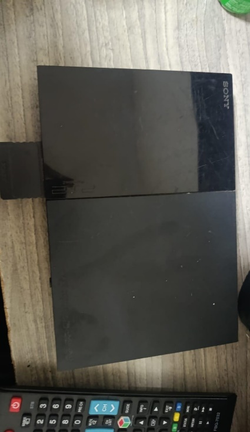
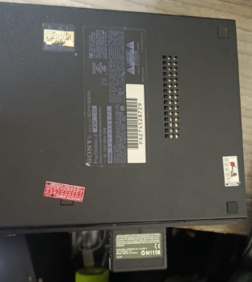
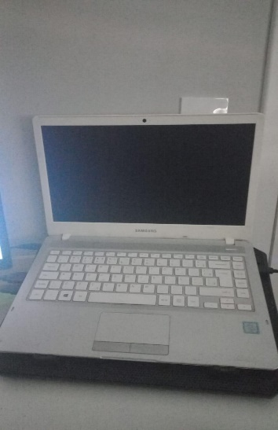
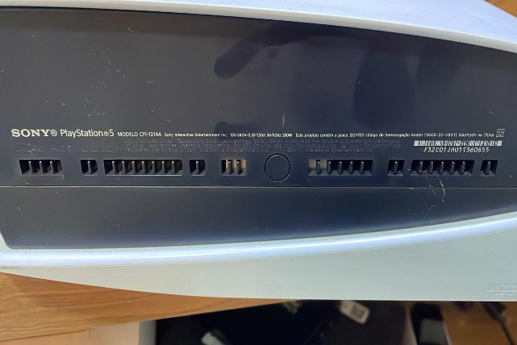
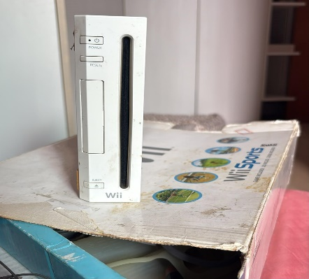
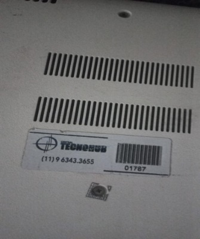
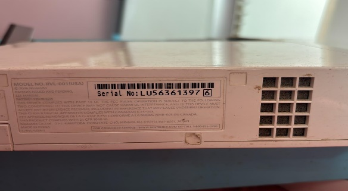
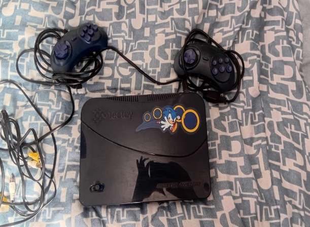
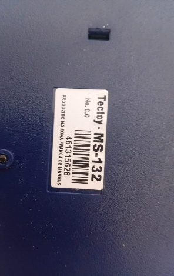
ANEXO 03
1. Fotos, Gráficos e Infográficos:
Segue abaixo fotos do site
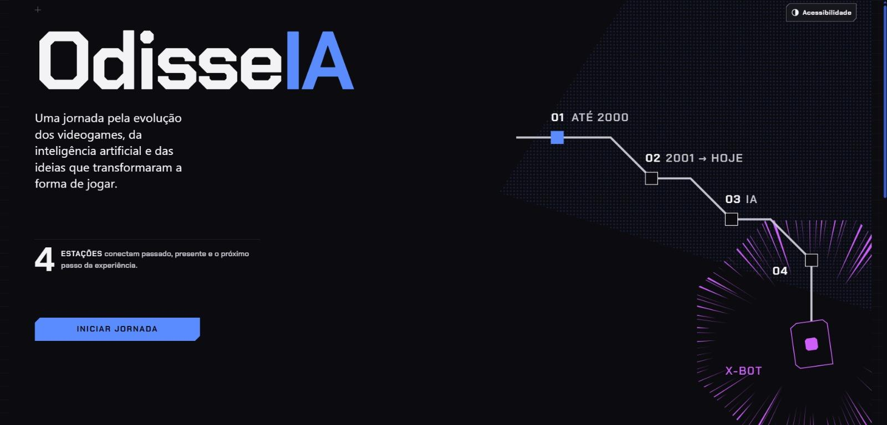
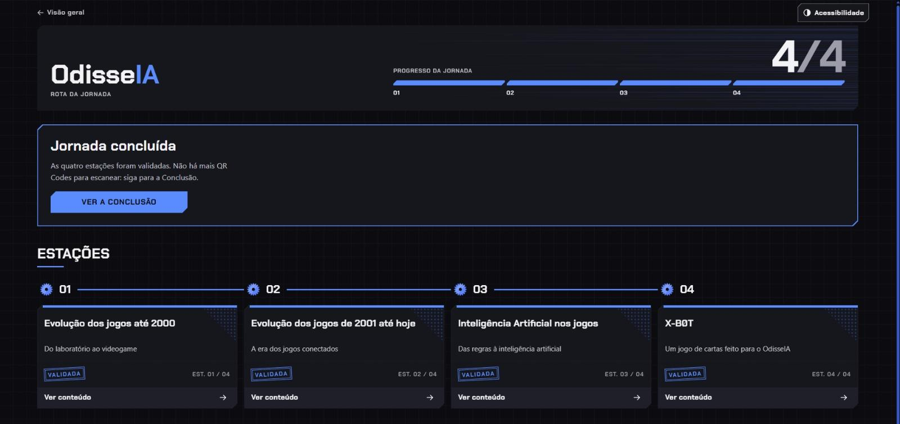
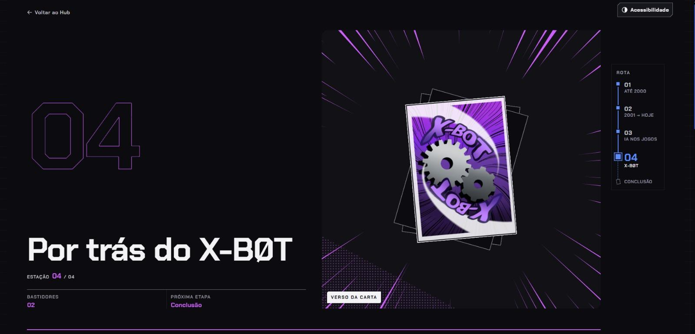
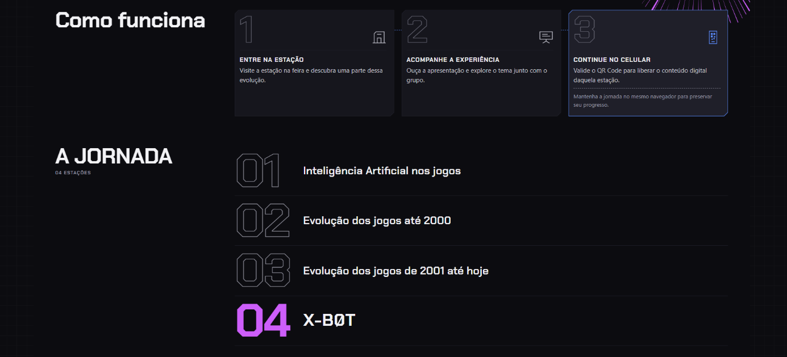
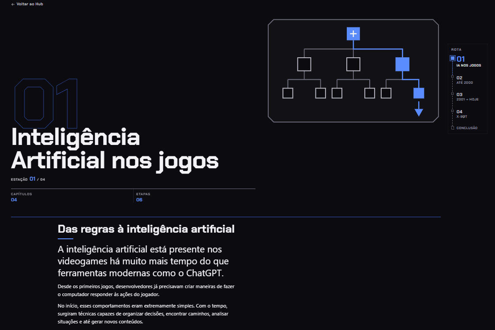
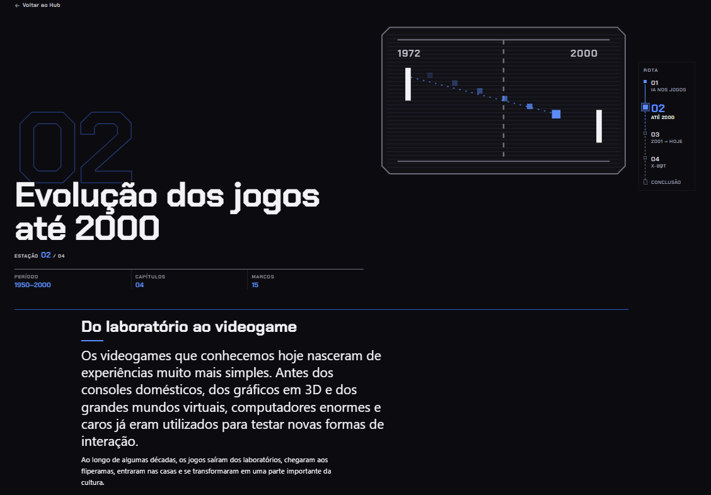
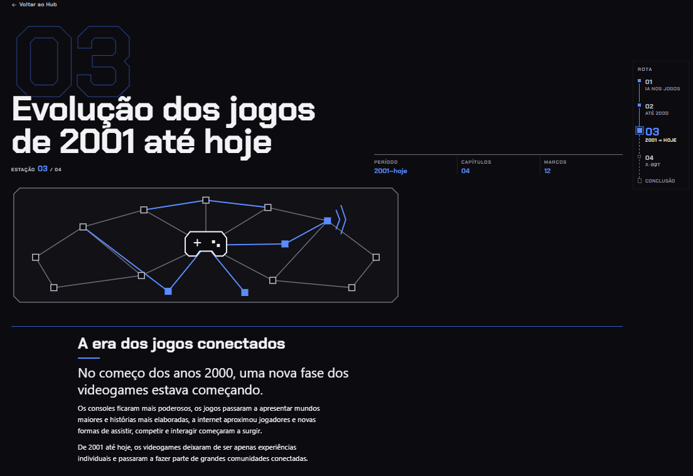
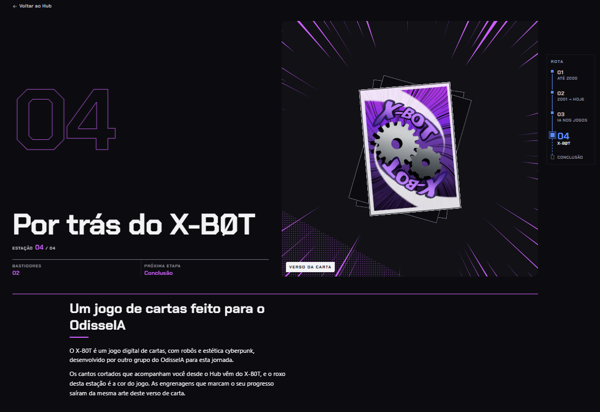
Segue abaixo foto do jogo:
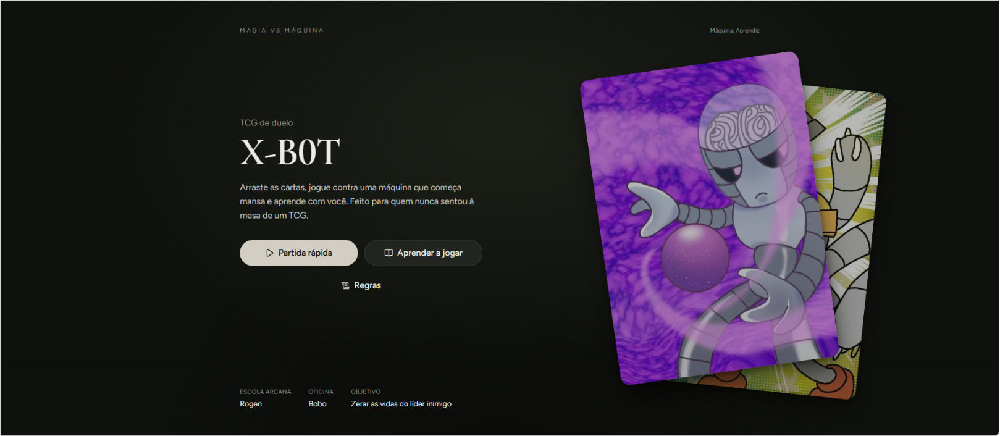
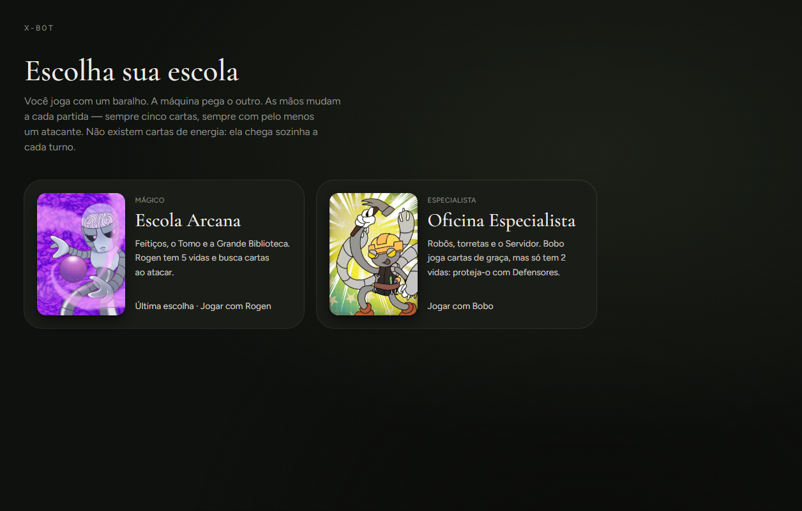
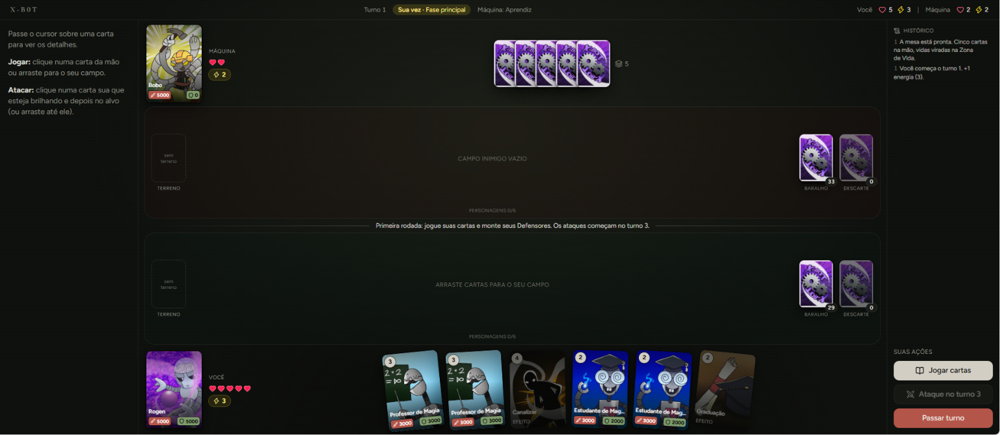
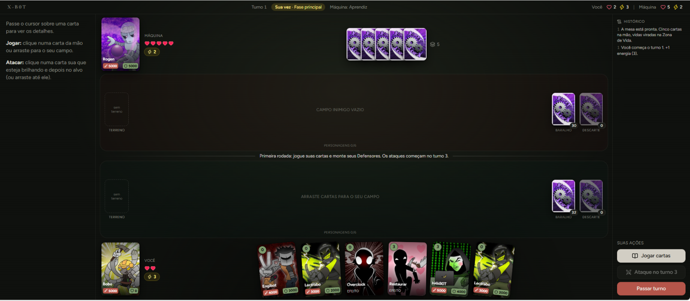
Segue abaixo fotos das cartas do jogo XBot:
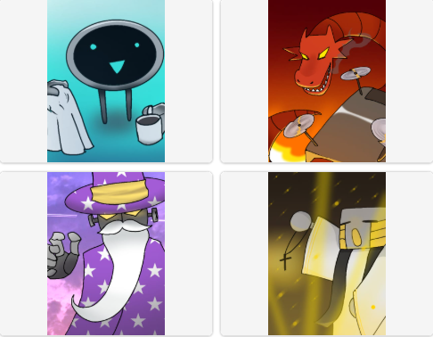
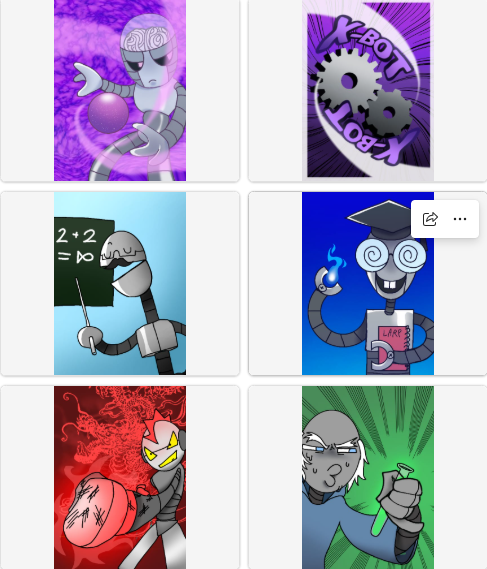
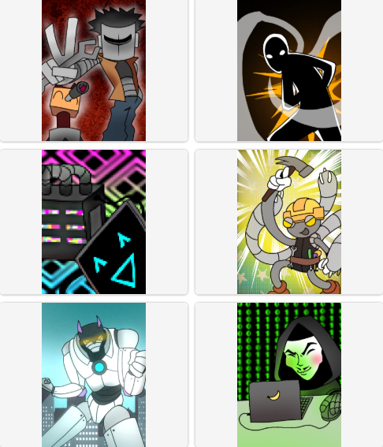
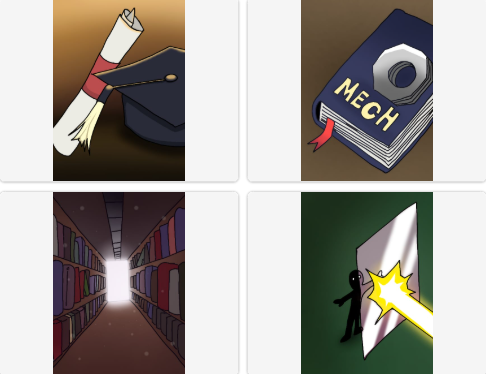
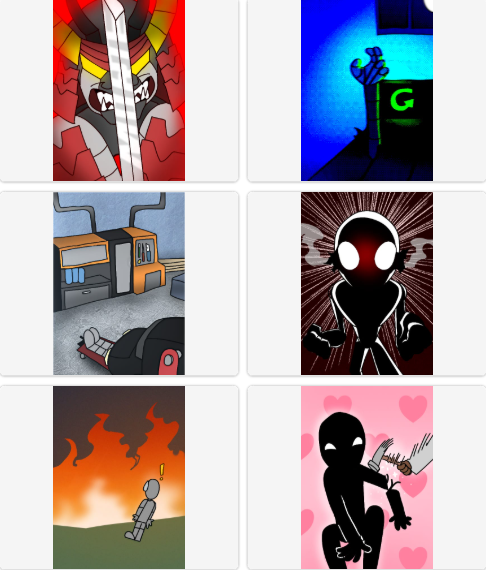
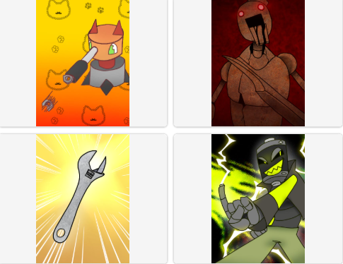
Segue abaixo qr code das apresentações:
index(parte inicial)